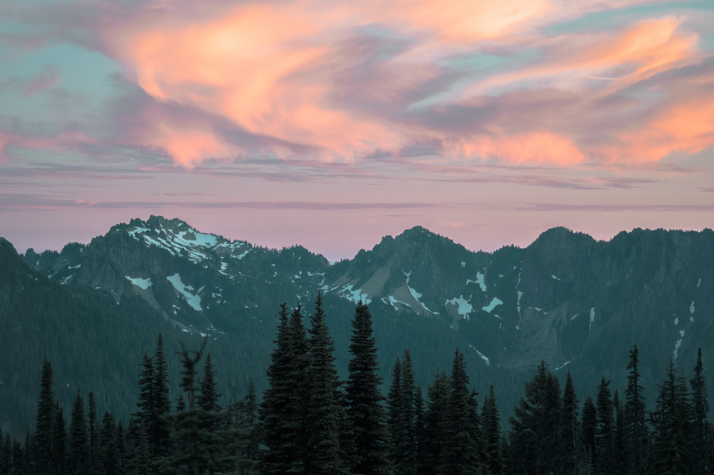
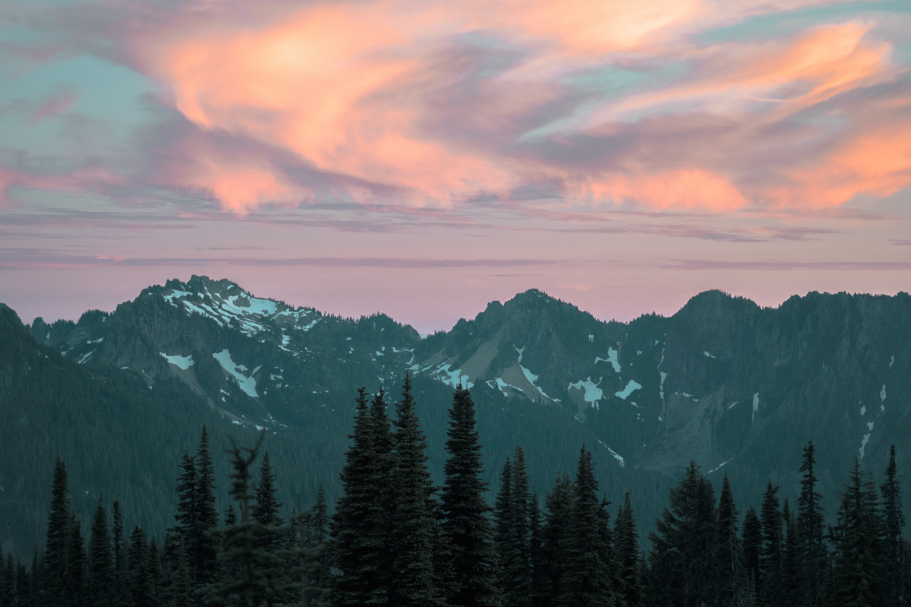

Travel
Paris

Paris, the capital of France is one of the most visited locations in the world. It is home to the iconic Eiffel Tower and has a population of over 2 million people.
Paris is known not just for its views, but also for its food. There is a plethora of unique restaurants that serve unforgettable food.
Photo Gallery


Top Activites
- Visiting the Eiffel Tower
- Visiting the Louvre Museum
- Dining in
Boston

Boston, Massachusetts, is a city where American history comes to life. With its storied past, including the Boston Tea Party and the Battle of Bunker Hill, the city preserves its heritage through historic landmarks and the Freedom Trail.
Beyond history, Boston is a vibrant cultural and academic center, home to renowned universities like Harvard and MIT, as well as world-class museums, theaters, and a thriving sports scene.
Photo Gallery


Top Activities
- Visiting Charles River
- Visiting Emerald Necklace Park
- Trying the local cuisine
Seattle

Seattle, nestled in the Pacific Northwest, harmoniously blends city living with nature's beauty. The iconic Space Needle stands tall, offering sweeping views of mountains and water.
Seattle's cultural scene thrives with museums, theaters, and a rich music history, while its commitment to sustainability and outdoor activities makes it a haven for nature lovers.
Photo Gallery
 


Top Activities
- Visiting the Space Needle
- Visiting Pike Place
- Viewing Mount Rainer
New York City

New York City, often dubbed the "City that Never Sleeps," is a bustling metropolis like no other. Its iconic skyline, dominated by towering skyscrapers like the Empire State Building and One World Trade Center, symbolizes its ceaseless ambition and innovation.
Beyond the surface, New York City's subway system and iconic yellow taxis make it remarkably accessible, allowing residents and visitors alike to explore its diverse offerings. This city is a stage for dreams to be pursued, a canvas for artistry to flourish, and a relentless engine of progress.
Photo Gallery


Top Activities
- Trying New York style pizza
- Visiting Central Park
- Visiting the Empire State Building
Guanajuato, Mexico

As the sun dips low in the sky, Guanajuato, the vibrant small town in Mexico, unfolds a spectacular tableau of hues and shadows that bewitch every onlooker. The historic town, celebrated as the backdrop for the acclaimed animation "Coco," transforms into a realm of dreams.
The array of colors presented by the quaint houses form a harmonious canvas that radiates a tranquil yet vibrant energy as the day transitions to night. This little town, full of life and color, offers a surreal experience, inviting dreamers and artists alike to immerse themselves in its poetic scenery, alive with stories and rich cultural tapestry.
Photo Gallery
.jpg)

Top Activities
- Trying the local cuisine
- Visiting Teotihuacan
- Experience the night life